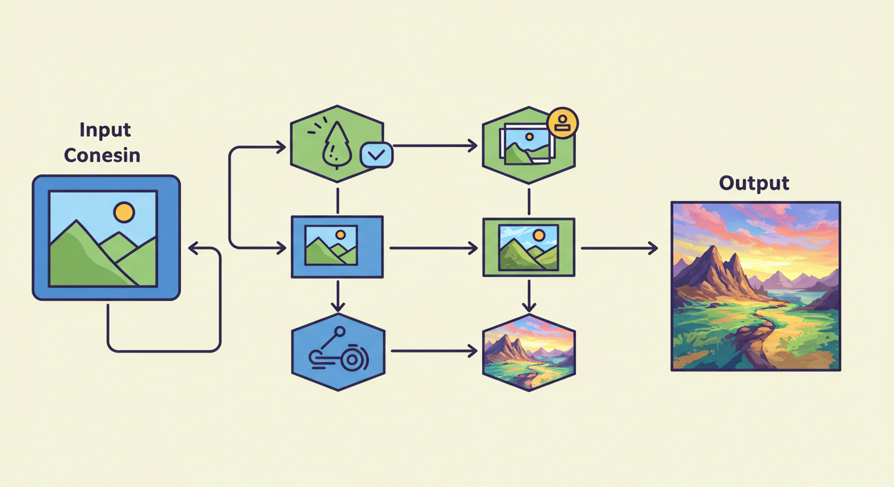

다양한 활용 사례

얼굴 인식 출석 시스템
학교/회사에서 AI Creator로 만든 얼굴 인식 모델을 활용하여 편리한 자동 출석 관리가 가능합니다.
주식 가격 예측 도구
과거 주식 데이터를 학습시킨 예측 모델로 미래 주가 변동을 예상하여 투자 전략 수립에 도움을 받습니다.
고객 감성 분석 서비스
온라인 리뷰/댓글 데이터의 감성을 분석하여 고객 반응을 파악하고 서비스 개선에 활용합니다.

이미지 스타일 변환 앱
AI Creator의 생성 모델을 활용하여 사진에 다양한 예술적 스타일을 적용하는 애플리케이션을 개발합니다.